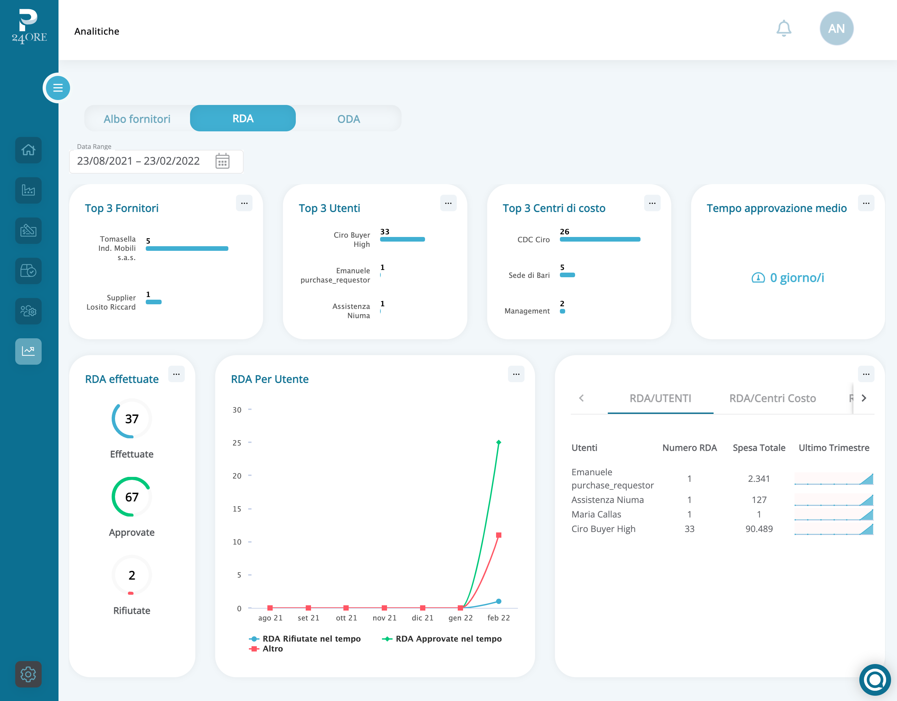

<section class="bg--primary__gray__gradient border-bottom-line px-2 md:px-0 min-h-screen">
    <div class="container-2xl mx-auto md:pb-20 px-5">
        <div class="md:my-24 md:mt-0 mt-24 text-center">
              <h1 class="text-3xl md:text-3xl lg:text-4xl xl:text-5xl md:leading-tight text-primary text-center px-5 md:px-0">Dashboard Analitiche</h1>
              <button class="btn--primary rounded-md hover:font-semibold tracking-widest leading-none relative whitespace-pre ml-5 self-center mt-12" [routerLink]="['../onboarding']" [queryParams]="{type: 'Demo'}" style="min-width: min-content; height: fit-content;" type="button">
                Richiedi una demo gratuita
              </button>
            </div>
            <div class="md:flex row mt-12">
                <div class="md:w-6/12 p-3 md:mr-8">
                  
                </div>
                <div class="md:w-6/12 p-3">
                  <h1 class="text-xl  md:text-xl lg:text-2xl xl:text-3xl md:leading-tight my-5 text-primary">Accedi alla tua dashboard per avere una panoramica generale della situazione gestita dalla piattaforma.</h1>
                  <p>
                    Tramite le analitiche puoi consultare i dati che riguardano l’albo fornitori, le RdA, gli ordini, gli utenti che hanno accesso alla piattaforma e i Centri di costo. Scarica le statistiche che riguardano un determinato arco temporale, valuta i fornitori, gli acquisti, i buyer e costruisci una Spend Analysis accurata.                    </p>
                  <br>
                  <p>
                    Con Procurement24Ore potrai accedere a una dashboard in real-time. All’interno di questa sezione potrai risalire a informazioni quali: le statistiche per ogni centro di costo, la visione completa delle spese aziendali, i dati relativi a tutti i supplier e ai buyer.  
                  </p>
                <br>
                  <p>
                    Grazie alle analitiche sui fornitori potrai valutare quali sono i supplier più utilizzati dalla tua azienda, qual è la spesa relativa a ciascun fornitore e tante altre informazioni.        
                  </p>           
                    <br>
                  <p>
                    Nella sezione relativa agli utenti attivi sulla piattaforma potrai ricavare i dati che riguardano ciascun utente: chi effettua più RdA, quali sono gli utenti approvatori, la percentuale di approvazione o rifiuto delle RdA e i relativi tempi.   
                  </p>
                    <br>
                  <p>
                    Attraverso i dati della sezione dedicata agli ordini di acquisto potrai ricavare le informazioni che riguardano gli ordini attivi in piattaforma, quelli chiusi, quelli relativi a ciascun fornitore (con annessi costi) e soprattutto avrai una visione di quali sono le categorie merceologiche che coprono la maggior parte della tua spesa.   
                    <br>
                  </p>
                  <div class="md:flex mt-5">
                    <button routerLink="../orders" class="btn--secondary__blue w-full mt-4 pr-8 text-sm rounded-md tracking-widest leading-none relative my-4"  type="button">
                        Automazione Ordini <span class="arrow absolute pl-1">→</span>
                    </button>
                    <button routerLink="../suppliers" class="btn--secondary__blue w-full mt-4 md:ml-5 pr-8 text-sm rounded-md tracking-widest leading-none relative my-4"  type="button">
                        Albo Fornitori <span class="arrow absolute pl-1">→</span>
                    </button>
                    <button routerLink="../approval-flow" class="btn--secondary__blue w-full mt-4 md:ml-5 pr-8 text-sm rounded-md tracking-widest leading-none relative my-4"  type="button">
                        Flussi approvativi <span class="arrow absolute pl-1">→</span>
                    </button>
                </div>
                </div>
            </div>
    </div>
</section>